From Rules to Recall
Hi. Some problems you can solve by writing the rule yourself: area is width times height, done. Others you can't, because nobody can write down the rule for "will it rain tomorrow?" or "is this email spam?". This page starts at that exact wall and climbs: we let the computer learn the rule from data, clean the data it learns from, and finish by proving, with numbers, whether what it learned is any good.
Pictures come from your slides and notebooks, and each caption says which deck and slide, so you can flip back to it. Tap any picture to see it larger. Numbers quoted from the labs are the ones the notebooks print. The syllabus also lists neural networks, SVM, clustering and PCA, but those decks aren't in the folder yet, so they aren't here yet.
- Chapter 1 asks what AI actually is. (Deck 02)
- Chapter 2 explains why we learn rules from data, the four kinds of learning, and the life cycle of a real project. (Deck 04)
- Chapter 3 gets NumPy and pandas into your hands. (Notebooks 03)
- Chapter 4 fits your first model, a straight line, and watches gradient descent walk downhill. (Deck 05)
- Chapter 5 cleans the data, because real data arrives broken. (Deck 06)
- Chapter 6 bends the line into a yes-or-no answer. (Deck 07)
- Chapter 7 measures whether any of it works. (Deck 08)
What Is Artificial Intelligence?
1.1 The definition
Artificial intelligence is the field of study that designs systems which simulate or mimic human cognitive abilities.
That still leaves a question: mimic what, exactly? The textbook (Russell and Norvig) splits the answers into four goals, and the slide draws them as four cards.
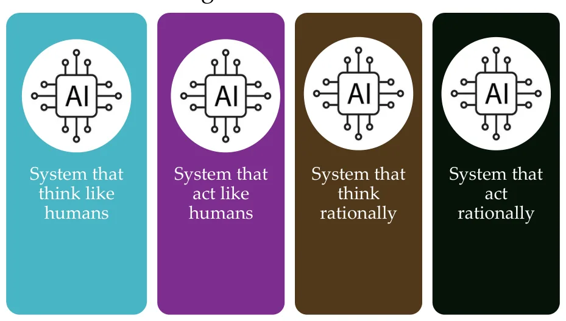
Thinking like a human is hard to study, because we barely know how we think. Acting exactly like a human isn't even what you want from a calculator. So most of computer science settled on the fourth card, acting rationally: given what you can see, do whatever gets the best outcome, or the best expected outcome when you can't be sure.
That definition is more useful than it sounds, because "best outcome" is something you can measure. Chapter 7 is built on that.
1.2 Where you've already met it
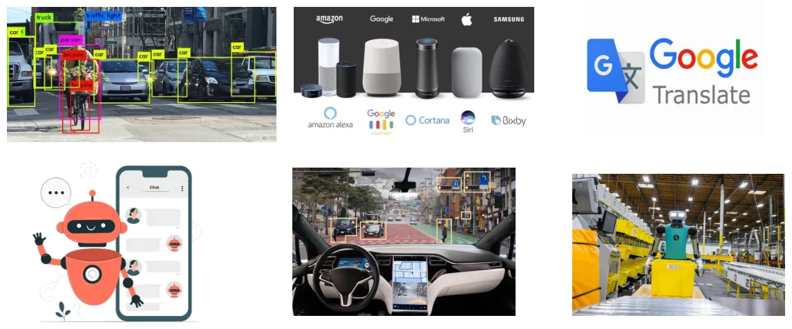
All six of these do one specific job well. None of them can do another one's job. Keep that in mind for section 1.5.
Once a system acts in the world, "the best outcome" stops being a purely technical question. The next slide makes that uncomfortable.
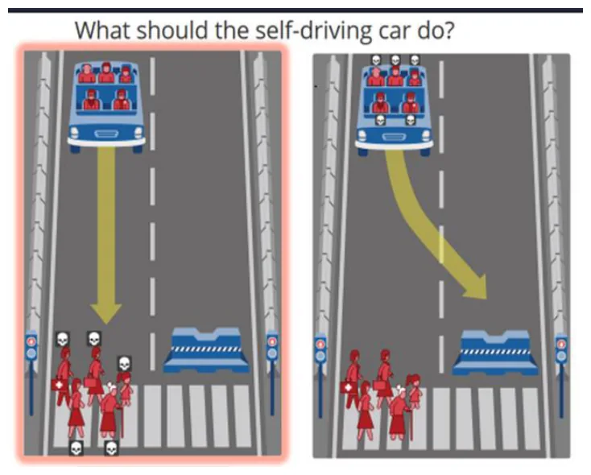
This dilemma is the one MIT's Moral Machine experiment put to the public. It collected about 40 million decisions from people in 233 countries and territories (Nature, 2018), and the answers varied by culture. A rational agent maximises a goal, but people have to choose the goal, and people don't fully agree on it.
1.3 Intelligent agents
An intelligent agent is anything that perceives its environment and acts to reach a goal. It's the frame the whole field uses.
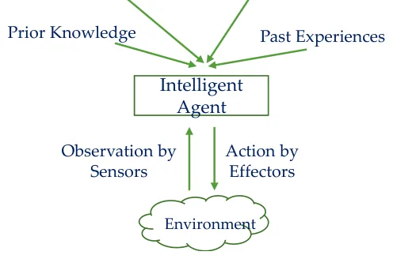
| Agent | Sensors | Effectors | Goal |
|---|---|---|---|
| Self-driving car | Cameras, lidar, radar | Steering, brakes | Arrive safely |
| Spam filter | The email text | Move it to the spam folder | Keep your inbox clean |
| Chess engine | The board | The next move | Win |
Notice "past experiences" feeding into the box in the picture. An agent that improves from its own experience is exactly what machine learning builds.
1.4 Fields of AI
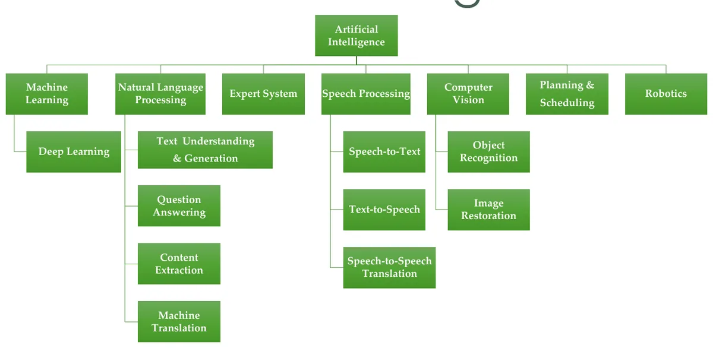
| Field | What it does | One application |
|---|---|---|
| Machine learning | Learns patterns from data | Spam filtering |
| Deep learning | ML with many-layered neural networks | Image recognition |
| Natural language processing | Works with human text | Machine translation |
| Speech processing | Turns speech to text and back | Voice assistants |
| Computer vision | Understands images | Reading number plates |
| Robotics | Acts physically in the world | Warehouse robots |
1.5 Narrow, general, super
- Artificial narrow intelligence does one kind of task. Everything in section 1.2 is this.
- Artificial general intelligence would handle any intellectual task a person can. It doesn't exist yet, and people argue about how close we are.
- Artificial super intelligence would beat humans at everything. It's hypothetical.
1.6 The AI lab: questions worth having an opinion on
Intro to AI · discussion questions
The lab has no code. It asks you to answer in your own words: how AI differs from human intelligence, whether it can be creative, whether it could ever be unbiased, how students should use it responsibly, and which AI application would be useful in Cambodia.
The bias question has a concrete answer, so let's use it.
In 2018 Reuters reported that Amazon had scrapped an experimental hiring tool. It had learned from ten years of past resumes, most of them from men, and it taught itself to mark down resumes containing the word "women's". Nobody programmed that in. It came from the training data. That's why a model can't be more fair than the history it learns from, and it's your answer to "where can bias enter?"
Check yourself: Chapter 1
What Is Machine Learning?
2.1 Can a machine learn?
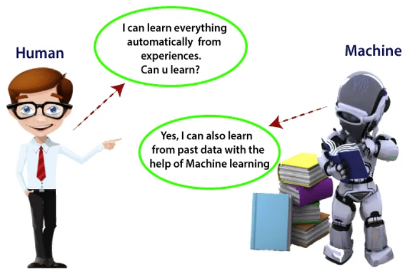
Normal programs do what they're told. Machine learning is what you reach for when you can't say what to tell them. It sits inside AI, and deep learning sits inside it.
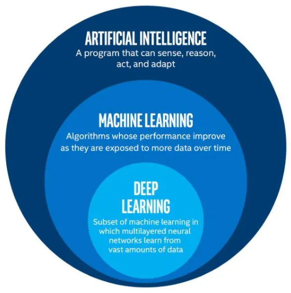
There are two classic definitions. The first is the idea and the second is the test.
- Arthur Samuel, 1959: the field of study that gives computers the ability to learn without being explicitly programmed.
- Tom Mitchell, 1998: a program learns from experience \(E\) with respect to task \(T\) and performance measure \(P\) if its performance on \(T\), measured by \(P\), improves with \(E\).
Mitchell's version is great for exams because you can fill it in. For a spam filter: T is classifying emails as spam or not. E is watching you label emails. P is the fraction it gets right.
Samuel didn't invent the phrase for fun. He was at IBM writing a checkers program, and he couldn't program in all the strategy because he wasn't good enough himself. So he made it play thousands of games against itself and adjust. By 1962 it beat a strong human player. A program ended up better than its author at his own task, and that's why the field exists.
2.2 Why machine learning?
The slide puts two problems side by side, and it's the most important picture in this chapter.
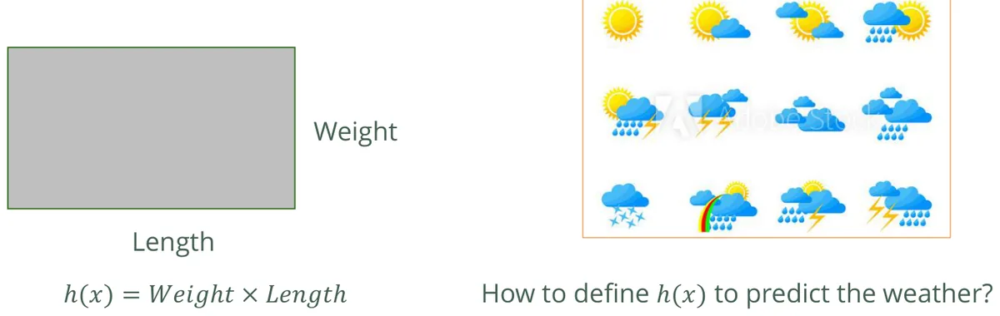
So we flip the job around. Instead of writing \(h(x)\) ourselves, we hand over examples of inputs and correct outputs, and an algorithm finds \(h(x)\) for us.
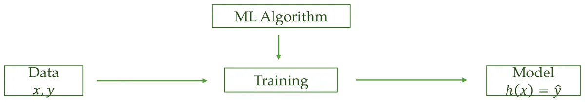
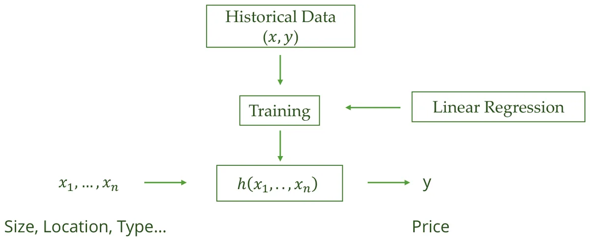
Early spam filters were hand-written rules: block "FREE!!!", block "viagra". Spammers read the rules and wrote "FR3E" and "v1agra", so the rules had to be rewritten forever. In 2002 Paul Graham's essay A Plan for Spam showed that a simple statistical filter trained on his own mail caught about 99.5% of spam. When spammers change their tricks, you retrain instead of rewrite. Today Google says Gmail's learned filters block more than 99.9% of spam, phishing and malware.
Teaching a child what a dog is. You don't give them a definition with a rule for ear shape. You point at dogs and say "dog" until they get it. Machine learning works the same way.
2.3 Supervised learning
In supervised learning every training example comes with the right answer, the label, like a student working with a teacher.
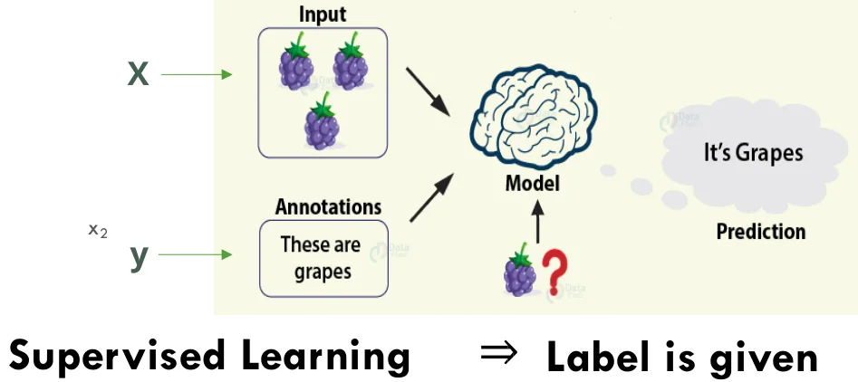
There are two kinds of task, and the only difference is the type of answer you want.
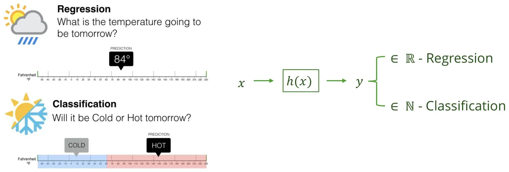
Regression: a number
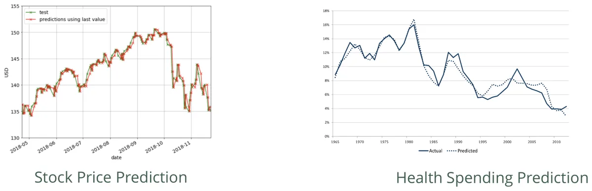
Classification: a category
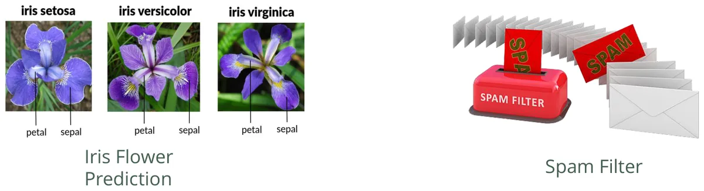
2.4 Unsupervised learning
In unsupervised learning there are no labels. Nobody says what the groups are, and the algorithm finds structure on its own.
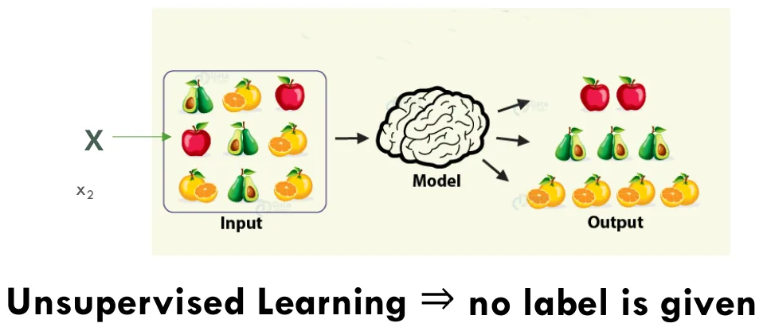
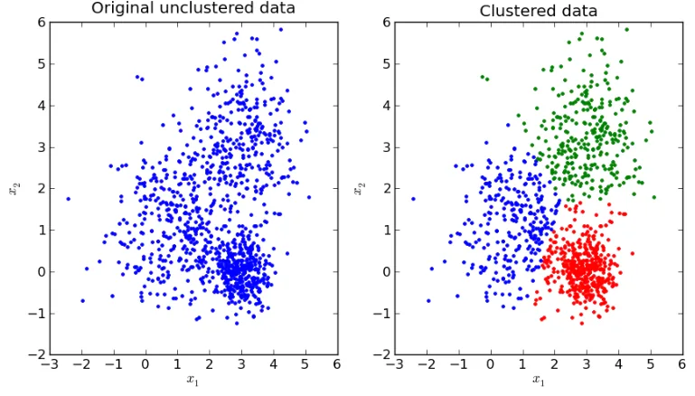
A catch the slides show nicely: "similar" depends on what you measure. The same basket of fruit groups differently by colour, by shape or by size. The algorithm can't tell you which grouping is the useful one. You decide that from the business problem.
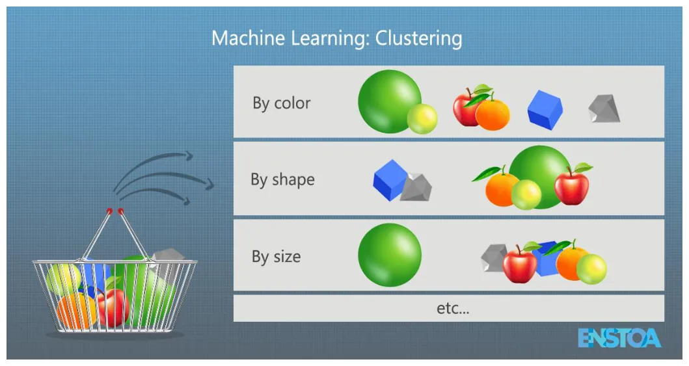
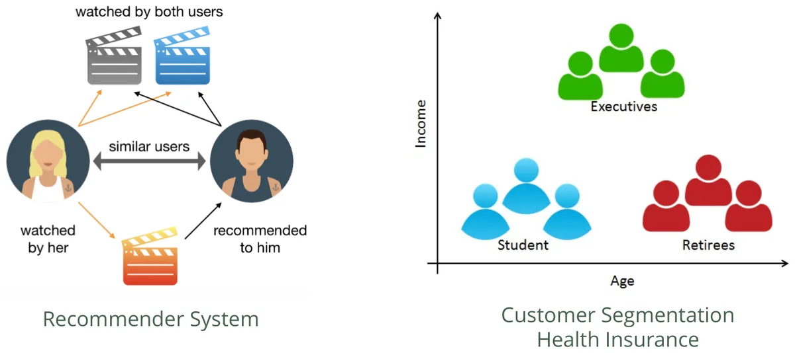
The other unsupervised task is dimensionality reduction: fewer columns, as little lost as possible. It matters because data gets lonely fast. The slide's picture shows 10 positions in one dimension, 100 in two, and 1,000 in three, so the same number of examples covers less and less of the space.
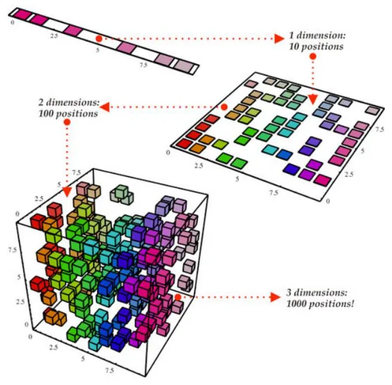
2.5 Semi-supervised and reinforcement learning
Semi-supervised learning uses a few labels and many unlabelled examples. It exists because labelling costs real money and time: unlabelled scans are cheap, but a radiologist's hour isn't.
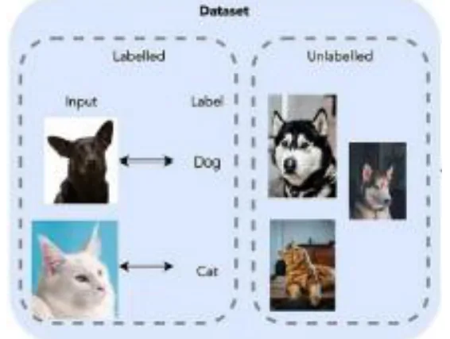
Photo apps do this. They cluster your photos by face without knowing any names. You name one person once, and the label spreads to every photo in that cluster.
Reinforcement learning has no labels either. An agent tries actions in an environment and gets rewards or penalties. It's the agent loop from Chapter 1 with a score attached.
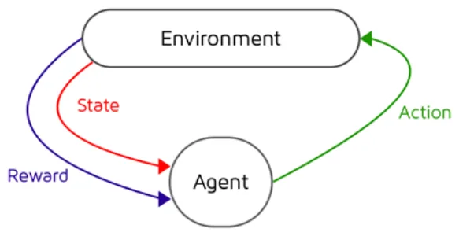
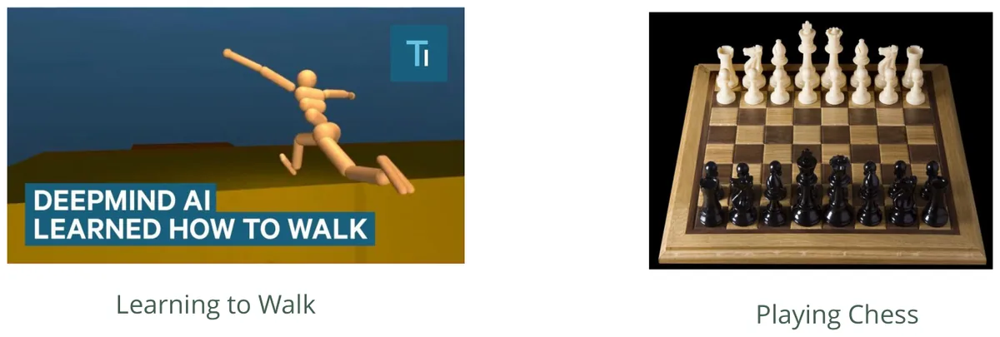
You can't label "the correct move" for every Go position, because nobody knows it. That's why DeepMind's AlphaGo trained largely by playing itself, and in 2016 it beat world champion Lee Sedol 4–1. The slide's next picture shows the same idea inside a chatbot: people rank answers, a reward model learns from those rankings, and reinforcement learning then tunes the chatbot toward answers people prefer.
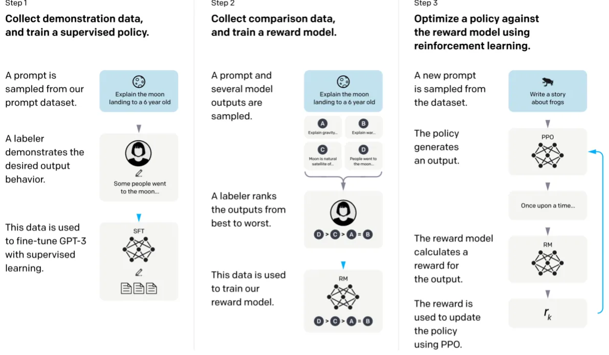
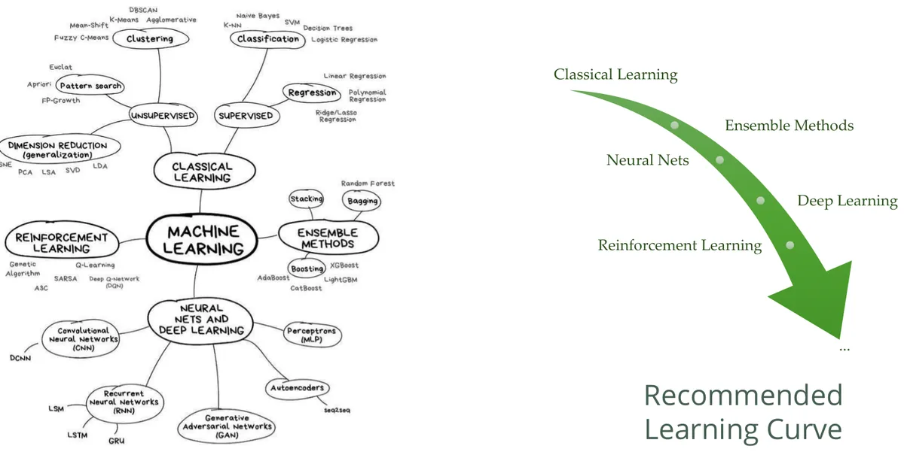
2.6 Sort the problems
The slides ask you to list your own examples of each type. Warm up here first. The test is always: is there a right answer in the data, and what shape does the answer take?
What kind of learning is this?
2.7 The machine learning life cycle
Students often think ML means training. Training is one of eight steps, and in a real project it isn't where most of the time goes.
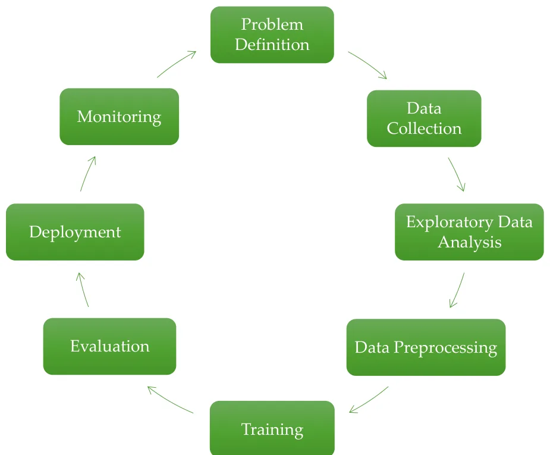
Press Run and follow one project all the way round: a spam filter for a company's email.
One project through all eight stages
The last two stages are where projects get hurt. Deployment: Netflix paid a $1 million prize in 2009 for a better recommender, then said it didn't put the full winning ensemble into production, because the extra accuracy wasn't worth the engineering effort. Monitoring: Zillow shut down its home-buying business in 2021 after its price forecasts overshot a shifting market. It wrote down over $300 million of homes and cut about a quarter of its staff. A model is only trained on the past, so someone has to keep checking it against the present.
2.8 As demonstrated in the Teachable Machine lab
Train an image classifier without code
You walk the cycle yourself: define a problem and its input and output, prepare examples, train in Teachable Machine, then test on at least 5 new examples and compute
The "new examples" rule is the whole lesson. A model that has already seen a photo should get it right, and that tells you nothing. Chapter 7 explains why, and what goes wrong when you forget.
Check yourself: Chapter 2
The Python Toolkit
Every model in this course is arithmetic over big tables of numbers. Two libraries handle that: NumPy for the arithmetic and pandas for the tables. The ML_03_python-DB_4 notebook is a refresher on plain Python (types, loops, functions), so we'll skip straight to these two.
3.1 NumPy: why not just use a list?
Because a Python list is slow, and machine learning does the same operation on millions of numbers. The notebook's first test multiplies a million numbers by 2:
Numpy notebook · list vs array
my_arr = np.arange(1_000_000) my_list = list(range(1_000_000)) %timeit my_arr2 = my_arr * 2 %timeit my_list2 = [x * 2 for x in my_list]
NumPy: 4.54 ms per loop Python: 238 ms per loop
That's about 50 times faster, and the code is shorter too. NumPy runs compiled loops over one tightly packed block of memory, while Python checks the type of every single element as it goes.
This speed is why a beginner-friendly language ended up running serious science. NumPy's 2020 paper in Nature notes it was part of the software behind the first image of a black hole and the first detection of gravitational waves. Those teams wrote Python and got compiled speed.
Three ideas cover most of what you'll use. Arithmetic is element-wise, a 2-D array is a table with a .shape, and slicing picks out rows and columns.
a = np.array([1, 2, 3]); b = np.array([9, 8, 7]) a + b # [10 10 10], no loop needed a * b # [ 9 16 21] A = np.array([[1,2,3],[4,5,6],[7,8,9]]) A.shape # (3, 3): rows, columns A[0, :] # first row A[:, 0] # first column
You'll meet .shape again right away. Scikit-learn insists on a 2-D input, which is why the labs keep writing X_train.reshape(-1, 1).
3.2 Pandas: your data's home
Real data has column names and mixed types, and it has holes in it. A DataFrame handles all of that. The notebook's picture says it best: a Series is one labelled column, and a DataFrame is several of them side by side.
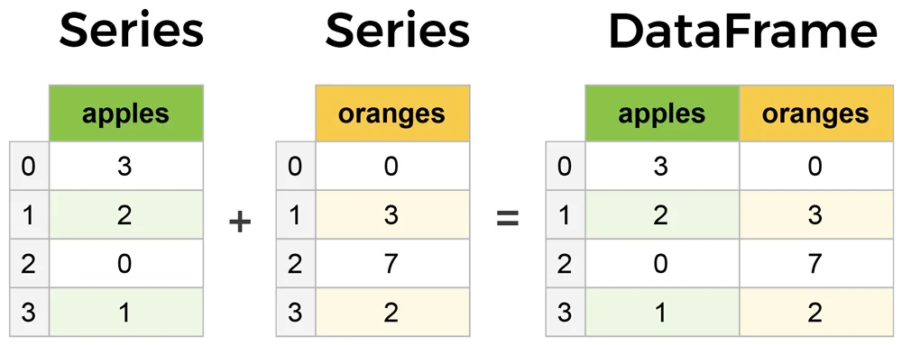
Pandas notebook · IMDB movies
The notebook loads 1,000 films and shows the first moves you'll make on any dataset, in this order:
movies_df = pd.read_csv("IMDB-Movie-Data.csv", index_col="Title")
movies_df.head() # look at it
movies_df.info() # types and non-null counts
movies_df.shape # (1000, 11)
movies_df.isnull().sum() # where are the holes?
movies_df.describe() # mean, std, quartiles
Revenue (Millions) 128 missing Metascore 64 missing Rating: mean 6.72, std 0.95, min 1.9, max 9.0
128 films with no revenue is a decision waiting to be made. Delete them? Fill them in? With what? Chapter 5 is about exactly that.
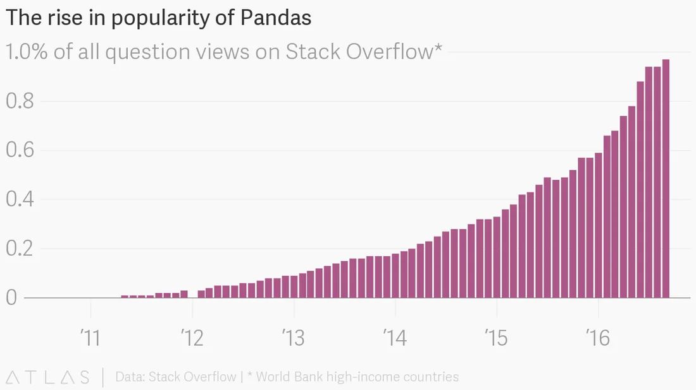
3.3 Try a DataFrame
This small table comes from the preprocessing notebook, and we'll clean the same table in Chapter 5. Click a line of pandas and see which cells it touches.
What does this line select?
Check yourself: Chapter 3
Linear Regression
4.1 Where it came from
The odd name has a story. In 1877 Francis Galton, Charles Darwin's cousin, measured pea seeds against the seeds of their parents. Then he did the same with human heights.
Tall parents tended to have tall children, but not as tall. Short parents had short children, but not as short. Heights were "regressing" toward the average, and the name stuck to the method even though the method now does far more.
Least squares, the maths under this chapter, is older still. In 1801 astronomers found the asteroid Ceres and then lost it behind the Sun after only a few weeks of readings. Gauss used least squares on those noisy readings to work out its orbit, and it turned up where he said it would. Fitting a line through noisy data is how we've always pulled a pattern out of imperfect measurements.
4.2 When to use it
Linear regression predicts a number when the input and the output have a roughly straight-line relationship. So look at the data before you fit anything.
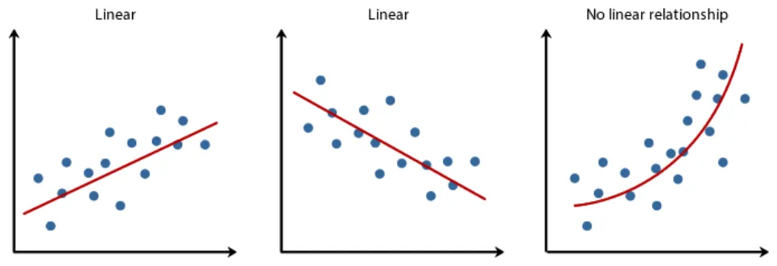
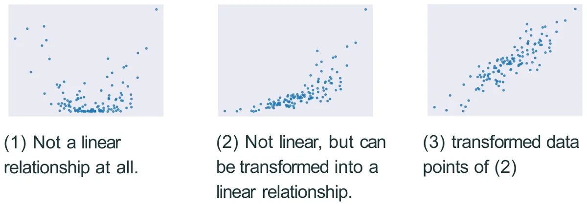
4.3 The model
The slides price land. You know the area of a plot and want its price.
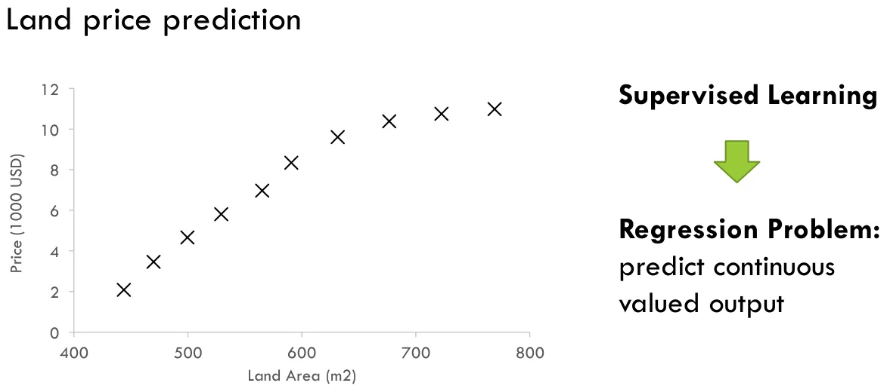
The notation is short, and you'll see it everywhere:
| Symbol | Meaning | Land example |
|---|---|---|
| \(m\) | Number of training examples | How many plots we have records for |
| \(x\) | Input, or feature | Size in m² |
| \(y\) | Output, or target | Price in 1000 USD |
| \((x_i, y_i)\) | The \(i\)th example | (90, 2.1), (130, 3.9), (210, 4.5)… |
Training turns those examples into a hypothesis \(h\), and \(h\) is the thing you actually use afterwards.
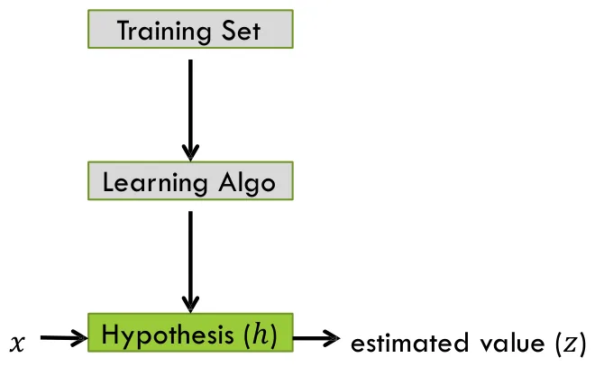
For one input, \(h\) is a straight line:
\(a\) is the weight: how much the price rises per extra m². \(b\) is the bias: where the line starts. Together they're the model's parameters, and training is nothing more than choosing them.
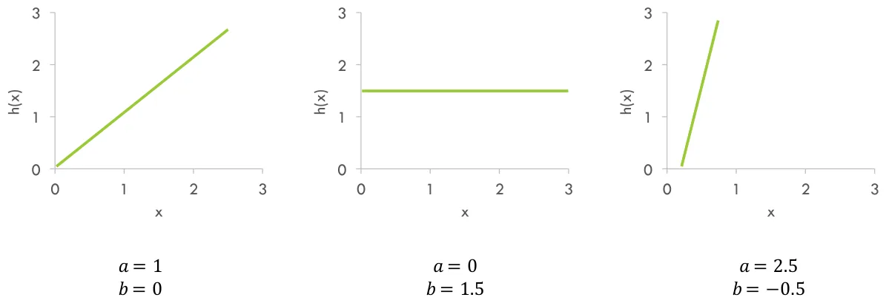
With more than one input, the same idea is called multiple linear regression: \(h(x) = w_1x_1 + w_2x_2 + \dots + b\). A price really does depend on size and location and age.
4.4 The cost function: scoring a line
To pick the best line we need one number that says how bad a line is. For each example, take the gap between the prediction and the truth.
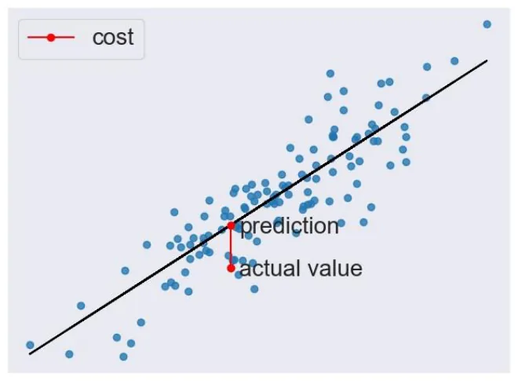
Average the squared gaps. Squaring makes every gap positive, so misses in opposite directions can't cancel out, and it makes big misses count far more than small ones.
Now you be the learning algorithm. Move the sliders and try to get \(J\) as low as you can.
Fit the line by hand
Each vertical line is one example's error. Made-up plots shaped like the slide's chart, with area in units of 100 m².
The lab plots what you just did, for every possible \(w\) and \(b\). The surface is a bowl: one bottom, and every direction from anywhere leads down to it.
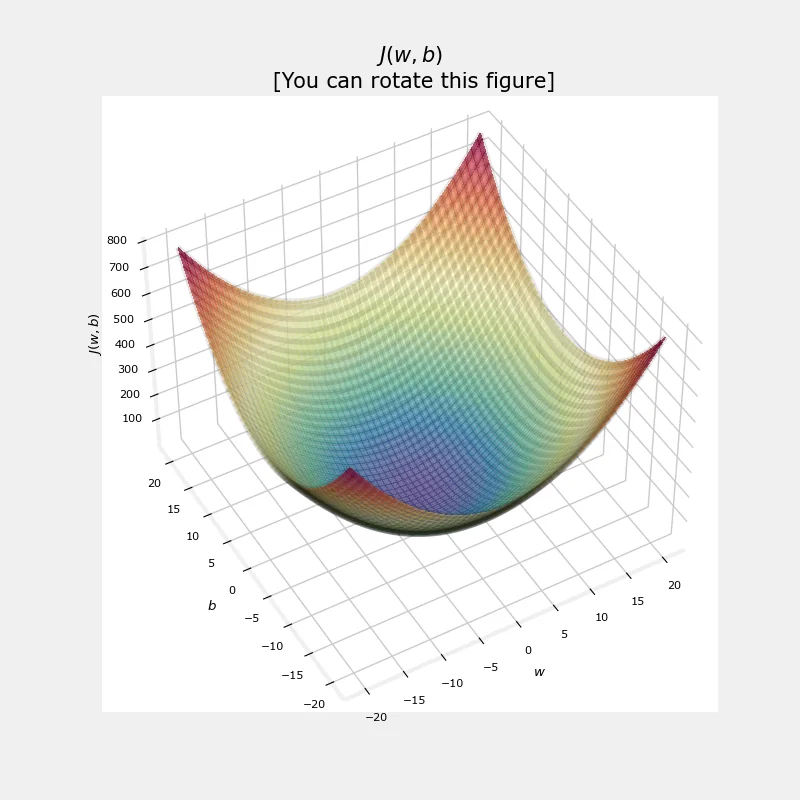
The slides use \(\frac{1}{m}\) and the lab notebooks use \(\frac{1}{2m}\). Both give the same best line, because dividing by 2 doesn't move the bottom of the bowl. The \(\frac12\) just cancels the 2 that appears when you take the derivative. Use whichever your exam question gives you.
4.5 Gradient descent: walking downhill
You found a good line by nudging sliders and watching the number. Gradient descent is that same nudging as an algorithm. Start anywhere, work out which direction is downhill, take a small step, and repeat.
\(\eta\) is the learning rate, your step size. The derivative is the slope under your feet. A positive slope means downhill is to the left, so the minus sign moves you left, and a negative slope moves you right. The lab's picture shows exactly that.
You're on a hill in thick fog and want to reach the valley. You can't see the valley, but you can feel which way the ground tilts under your feet. Take a step that way, feel again, step again. That's the entire algorithm.
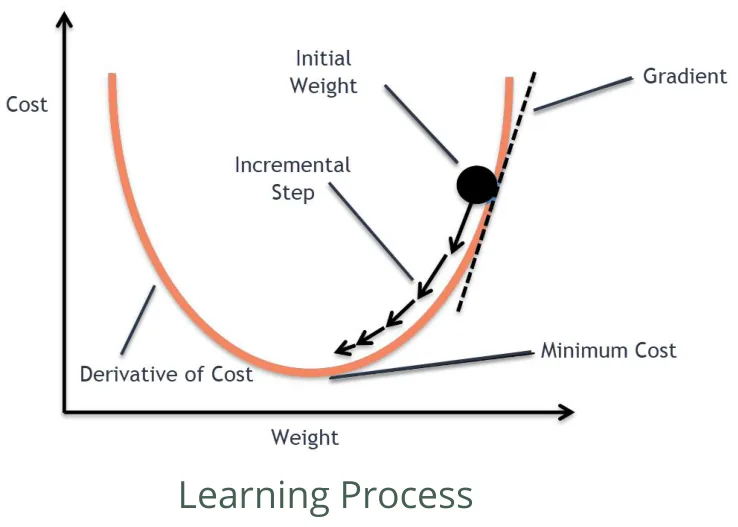
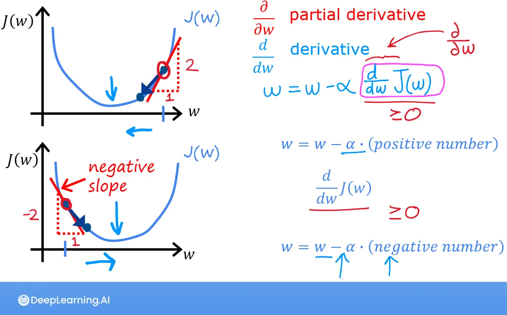
For our line, the slopes work out to:
Here \(w_1\) is the slope \(a\) and \(w_0\) is the bias \(b\). As a flowchart, the loop is:
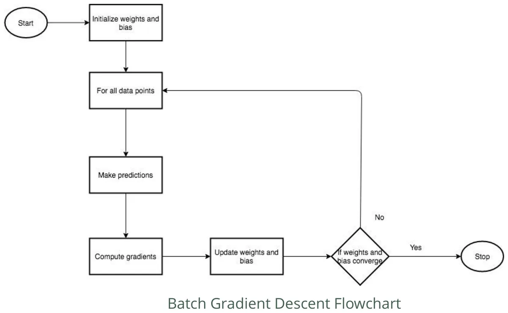
The slides then show it running. Step through the frames: on the left the bowl with the current position, on the right the line that position stands for.
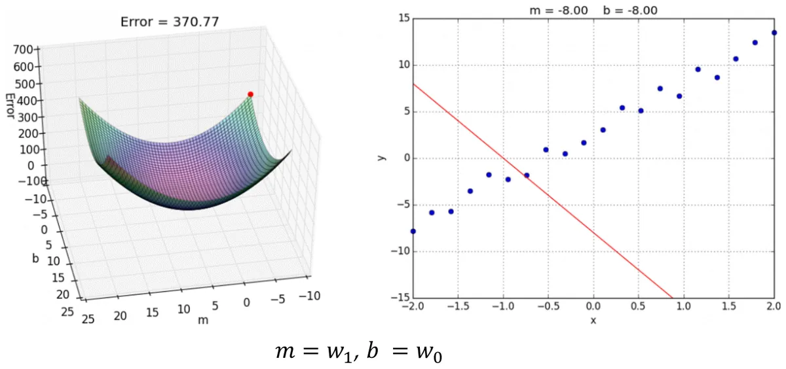
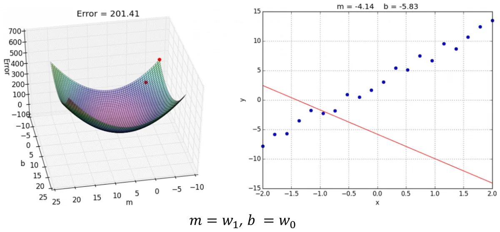
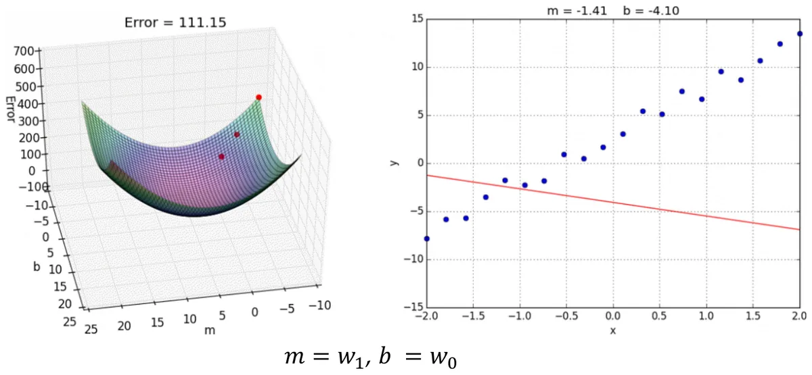
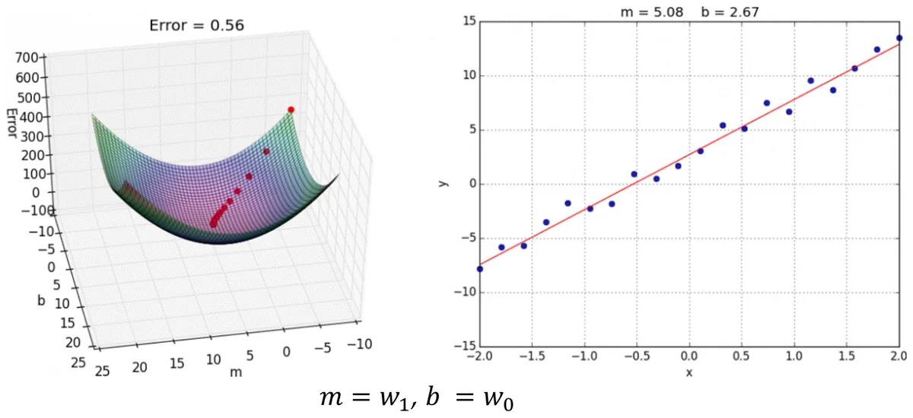
One caution from the slides: a real cost surface isn't always a clean bowl. On a bumpy one, gradient descent can settle into a local minimum, depending on where it starts. Linear regression's squared error has a single minimum, so that can't happen here. It will matter in Chapter 6.
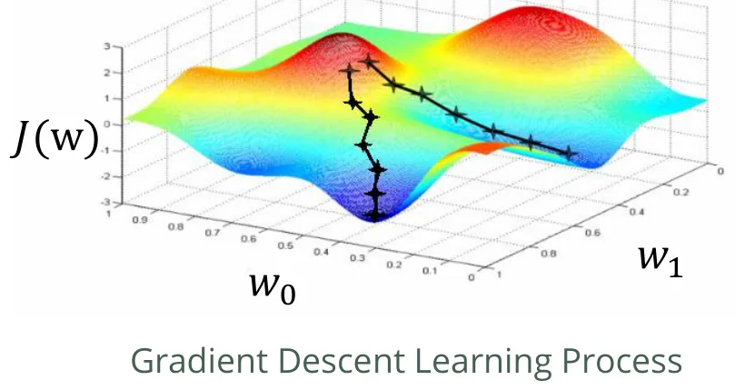
4.6 The learning rate
Step size is the one setting you have to choose yourself. Run all three below and compare them. The left chart shows the line being fitted. The right one shows the same run as a ball on the bowl.
Run gradient descent
The area is standardized first so one rate suits both weights. Chapter 5 explains why that matters.
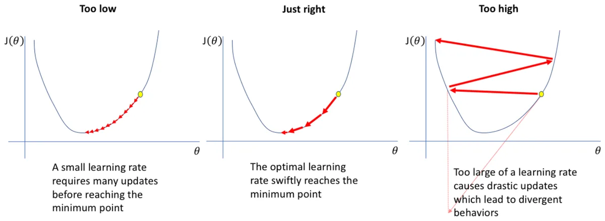
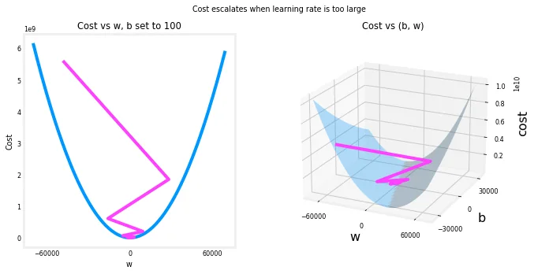
4.7 As demonstrated in the labs
The labs use the smallest dataset possible: two houses. A 1,000 sqft house sold for $300k and a 2,000 sqft house for $500k. Two points fix one line, so you can check every answer by hand: \(w = 200\), \(b = 100\).
Cost and Gradient descent · code that matches the maths
def compute_gradient(x, y, w, b):
m = x.shape[0]
dj_dw, dj_db = 0, 0
for i in range(m):
f_wb = w * x[i] + b
dj_dw += (f_wb - y[i]) * x[i]
dj_db += (f_wb - y[i])
return dj_dw / m, dj_db / m
Iteration 0: Cost 7.93e+04 w: 6.500e+00, b: 4.00000e+00 Iteration 1000: Cost 3.41e+00 w: 1.949e+02, b: 1.08228e+02 Iteration 9000: Cost 2.90e-05 w: 2.000e+02, b: 1.00024e+02 (w,b) found by gradient descent: (199.9929, 100.0116) 1200 sqft house prediction 340.0 Thousand dollars
It starts at \(w=0, b=0\), runs 10,000 steps at \(\alpha = 0.01\), and lands almost exactly on the true answer. Then the lab sets \(\alpha = 0.8\) and the cost climbs from \(2.58\times10^{5}\) to \(6.62\times10^{7}\) in five steps.
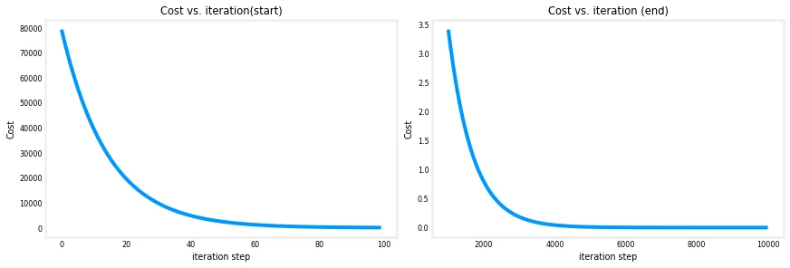
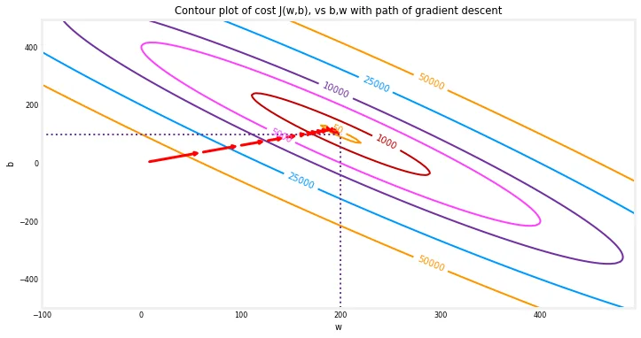
Scikit-learn · the same model in three lines
Nobody writes this loop at work. There are two ready-made versions, and it's worth knowing they get to the answer differently:
| Class | How it finds the line | Needs scaling? |
|---|---|---|
LinearRegression | Solves it directly with the closed-form least-squares formula | No |
SGDRegressor | Gradient descent, as in this chapter | Yes, use StandardScaler |
linear_model = LinearRegression() linear_model.fit(X_train.reshape(-1, 1), y_train) linear_model.coef_, linear_model.intercept_
w = [200.], b = 100.00 # the two houses w = [0.27 -32.9 -67.29 -1.47], b = 221.50 # houses.txt, four features predicted price (1200 sqft, 3 bed, 1 floor, 40 yrs) = $318936.36
On houses.txt both routes agree closely. SGDRegressor reached \(w =\) [110.29, −21.15, −32.55, −38.03] after 138 passes, against [110.56, −21.27, −32.71, −37.97] for the exact answer on the same scaled data.
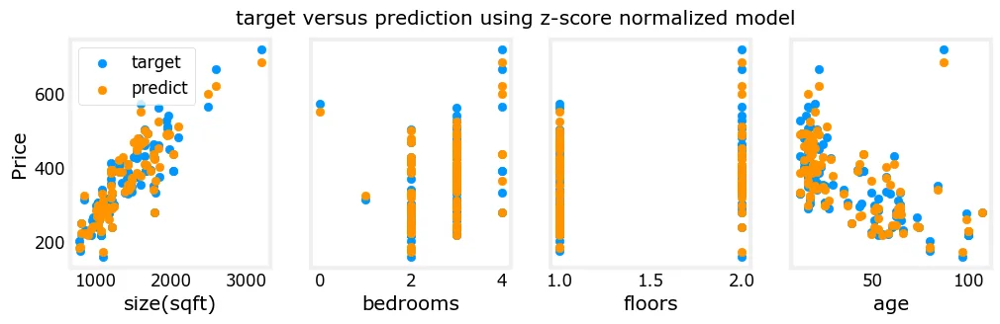
The scikit-learn lab prints Prediction for 1200 sqft house: $240100.00. That's wrong, because the model was trained with size in thousands of sqft, so it should be given 1.2, not 1200. The Gradient descent lab gets it right: \(200 \times 1.2 + 100 = 340\), or $340k. The model will happily calculate nonsense if your units don't match its training data. Remember this one.
Chapter 4 recap
- A line \(h(x)=ax+b\) has two parameters, and training chooses them.
- Cost \(J\) is one number for how bad a line is: the average squared gap.
- Gradient descent repeats \(w := w-\eta\,\partial J/\partial w\) until it stops improving.
- Too small an \(\eta\) is slow. Too big and it diverges.
- Linear regression's cost is a bowl with one bottom.
- Keep your units the same at training and prediction.
Check yourself: Chapter 4
Data Preprocessing
Gradient descent is only as good as what you feed it. Chapter 3's table had a person aged 200 in it. If nobody catches that, the model learns from it just as faithfully as from everyone else.
In October 2020, England's public health agency failed to report 15,841 positive COVID cases in its daily figures. The lab results came in as CSV files, and someone's pipeline loaded them into an old .xls Excel format, which stops at 65,536 rows. The extra rows silently vanished, and contact tracing for those people was delayed. No model was wrong and nobody's maths was off. The data just never arrived intact, and that's why this step gets its own chapter.
5.1 Types of data and variables
First, know what you're holding, because the type decides which operations even make sense.
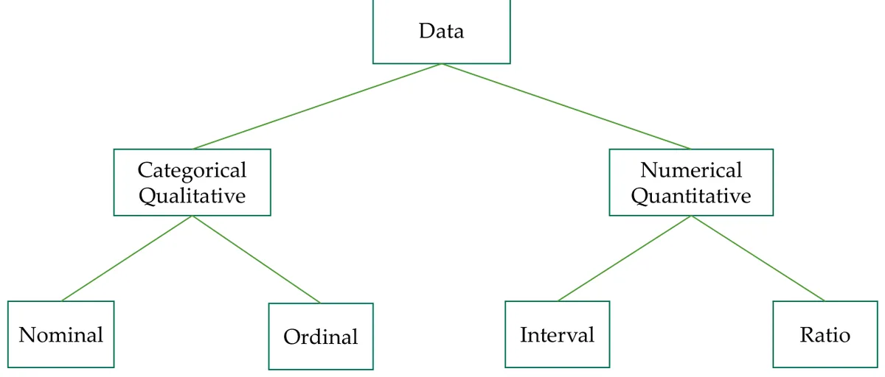
| Type | What it means | Examples | Test |
|---|---|---|---|
| Nominal | Labels with no order | Colour, language, religion | Can't say which is "more" |
| Ordinal | Labels with an order | Grade, satisfaction, race rank | Order yes, but the gaps aren't equal |
| Interval | Numbers with equal gaps and no true zero | °C, IQ score | 0°C isn't "no temperature" |
| Ratio | Numbers with a true zero | Height, weight, age | 20 kg really is twice 10 kg |
What you can do with each type:
| Property | Nominal | Ordinal | Interval | Ratio |
|---|---|---|---|---|
| Count, mode | ✓ | ✓ | ✓ | ✓ |
| Order is known | ✓ | ✓ | ✓ | |
| Median | ✓ | ✓ | ||
| Mean, add and subtract | ✓ | ✓ | ||
| Multiply and divide, true zero | ✓ |
The type also decides which chart to draw:
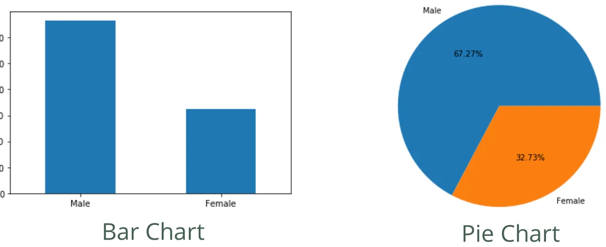
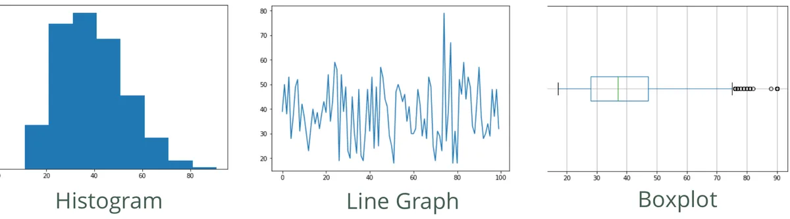
And a pair of words you already know under other names: the independent variable is your input \(x\), and the dependent variable is your output \(y\). It depends on \(x\), hence the name.
5.2 Cleaning: low variation and missing values
Low variation. A column where every row says the same thing can't tell rows apart. It carries no information, so drop it. The notebook drops Marital_Status because its only value is "Single".
Missing values. These don't always look missing. They might be NA, n/a, an empty string, ?, or worse, a number like -1 or -999.
df.isnull() only finds real NaNs. A -999 looks like a perfectly good number, so pandas won't flag it, and your average quietly goes wrong. Read the data first with describe() and look at the minimums.
You have two moves: delete the rows (fine if you have plenty of data) or impute, which means fill them in. Numbers get the mean, median or mode. Categories get the mode. A rule of thumb from the slides (credited to Vishal Patel): impute if under 50% is missing, and throw the feature away above 95%.
Mean or median? Try both. The Age tab shows why the choice matters.
Fill the gap
Data preprocessing notebook · impute
df.isnull().sum() # Sex 1, Salary 1, Education 2 imp = SimpleImputer(strategy="median") df[numeric_cols] = imp.fit_transform(df[numeric_cols])
The notebook also shows df.dropna(axis=1), deleting whole columns, and marks it "not recommended". You'd be throwing away every good value in a column because of one hole.
5.3 Outliers
An outlier sits an abnormal distance from everything else. It might be a typo, a broken sensor, or data mixed in from the wrong source. It might also be real, and that's the hard part. Maths can flag a value, but a person who knows the domain has to decide.
NASA's satellites were measuring ozone over Antarctica in the 1980s, but the processing flagged the extremely low readings as suspect. In 1985, British scientists using a ground instrument published the ozone hole, and reanalysis of the satellite data confirmed it. The "outliers" were the discovery. That's why the rule is flag and inspect, never delete automatically.
Method 1: Z-score
How many standard deviations from the mean is it? For bell-shaped data, about 99.7% of values fall within ±3, so anything beyond that is suspicious.
Method 2: IQR
Sort the data and cut it into quarters. The middle half has width \(IQR = Q_3 - Q_1\). Anything further than \(1.5 \times IQR\) past the box is flagged. It's what a boxplot draws.
Run the slide's two examples, then type your own numbers.
Find the outliers, step by step
Slide 17 writes the IQR rule as one chain of inequalities, but it means either side, as written above. And the boxplot on slide 27 labels the left end "Q₁ = −33.5". That number is the lower fence; the real \(Q_1\) is 17.5. Slide 19 also gives you mean = 10 and std = 30 rather than computing them, so type those numbers into your own working only if the question states them.
Data preprocessing notebook · removing Age = 200
Before and after removing the one outlier. On the left, everyone else is squashed into a sliver. On the right you can finally see the real spread.
5.4 Imbalanced data
In many real problems the thing you're looking for is rare. The model can then score well by ignoring it.
A well-known credit card dataset has 284,807 transactions and only 492 frauds, or 0.17%. A "model" that says "not fraud" every time is 99.83% accurate and catches nothing. That's why these methods exist, and why Chapter 7 won't let you trust accuracy alone.
Both have a cost. Undersampling throws away real data, and oversampling teaches the model the same few examples again and again, which invites overfitting. SMOTE is the middle road: it makes new minority examples instead of copies, by placing them on the line between a minority point and one of its nearest minority neighbours.
Watch SMOTE make new examples
5.5 Feature scaling
To an algorithm, numbers don't have units. House size runs into the thousands and bedrooms stop around 4. So when an algorithm measures distance, size drowns out bedrooms completely. Try it: which house is most like house A?
Scaling changes who your nearest neighbour is
Ranges and spreads taken from houses.txt: size mean 1414, std 412, min 788, max 3194; bedrooms mean 2.71, std 0.65, min 0, max 4.
| Method | Formula | Result | Use it when |
|---|---|---|---|
| Standardization | \(x_{new}=\frac{x-\bar x}{\sigma}\) | Mean 0, std 1 | Roughly bell-shaped data, gradient descent |
| Min-max | \(x_{new}=\frac{x-x_{min}}{x_{max}-x_{min}}\) | Between 0 and 1 | You need a fixed range, but one outlier can squash everything else |
- Distance-based algorithms (KNN, K-Means, PCA): otherwise the biggest column decides everything.
- Gradient descent converges much faster. That's why Chapter 4's lab used
StandardScaler, shrinking peak-to-peak ranges of [2410, 4, 1, 95] down to [5.85, 6.14, 2.06, 3.69].
Slide 35 states mean(\(x_1\)) = 10 and std(\(x_1\)) = 30, but the z-scores on slide 36 don't use those. Check: \((39-10)/30 = 0.97\), not the slide's 1.79. The table's numbers come from the data's actual mean and std, −5.57 and 24.86: \((39+5.57)/24.86 = 1.79\). So trust the table, and compute your own mean rather than copying the bullet.
5.6 Feature encoding
Algorithms do arithmetic, so words have to become numbers. The trap is that the numbers you pick can invent a meaning that was never there.
Label / ordinal encoding
Use it only when there's a real order.
small, medium, large → 0, 1, 2
"Large is bigger than small" is true, so 2 > 0 is fine.
One-hot encoding
Use it when there's no order: one new 0/1 column per value.
| Country | _Cambodia | _Thai | _Lao |
|---|---|---|---|
| Cambodia | 1 | 0 | 0 |
| Thai | 0 | 1 | 0 |
| Lao | 0 | 0 | 1 |
If you label-encode countries as Cambodia = 0, Thai = 1, Lao = 2, you've told a linear model that Lao is "twice" Thai and that the average of Cambodia and Lao is Thai. It will believe you. One-hot avoids that, at the cost of one column per value, which is why a column with thousands of values (like a city list) needs other methods such as hashing.
5.7 Feature correlation
Pearson's \(r\) measures how close two numeric columns are to a straight-line relationship, from −1 through 0 to +1. Two strongly correlated inputs tell the model nearly the same thing, so you can often drop one of them.
The slide's example is a shop's daily temperature against sales. Run all five steps of the calculation. Then press Add a strange day and see what one row does to \(r\).
Pearson correlation, step by step
\(r = 0.95\) doesn't prove heat causes sales. A classic example: ice cream sales and drownings rise together, and neither one causes the other, because summer drives both. For predicting, correlation may be all you need. For deciding what to change in the world, you need more than a correlation.
Data preprocessing notebook · heatmap
pearson_corr = df.corr(method='pearson', numeric_only=True) sns.heatmap(pearson_corr, cmap='PiYG', annot=True, vmin=-1, vmax=1, center=0)
5.8 The Delhi houses lab
MagicBricks.csv · what you're walking into
The lab hands you 1,259 real Delhi property listings and asks you to do everything in this chapter. Here's what a quick check of the file turns up, so you know what you're looking for:
| Problem | In this file | Section |
|---|---|---|
| Duplicate rows | 83 | Lab part 2, Q1 |
| Missing values | Per_Sqft 241, Parking 33, Furnishing 5, Type 5, Bathroom 2 | 5.2 |
| Outliers by IQR | BHK outside [0.5, 4.5]: 35 rows. Bathroom outside [0.5, 4.5]: 67 rows | 5.3 |
| Wildly different scales | Bathroom tops out at 7, Price at 240,000,000 | 5.5 |
| Text columns | Furnishing, Status, Transaction, Type | 5.6 |
| Correlation with price | Bathroom 0.73, Area 0.58, BHK 0.57, Parking about 0 | 5.7 |
Counted on the raw file, before you remove anything. Your counts will shift depending on the order you clean in. That's normal: duplicates first is the usual order.
Chapter 5 recap
- Nominal, ordinal, interval, ratio: the type decides what's allowed.
- Missing: delete or impute. The median resists outliers and the mean doesn't.
- Outliers: Z-score beyond ±3, or beyond 1.5 × IQR. Then a human decides.
- Imbalance: undersample, oversample, or SMOTE.
- Scale for distance and for gradient descent.
- One-hot for no order, label encoding for real order.
Check yourself: Chapter 5
Logistic Regression
6.1 From a number to a decision
Chapter 4 predicted a price. A lot of real decisions aren't numbers, though. Spam or not? Fraud or not? Which digit is this? Answers from a fixed set of options are classification.
Logistic regression is the standard first tool. Despite the name it does classification. It works in two moves: estimate a probability between 0 and 1, then compare it to a threshold to give a yes or a no.
6.2 Why not just use a straight line?
The slides try the obvious thing first. Predict obesity from weight: label "not obese" as 0 and "obese" as 1, fit a line, and call it obese wherever the line passes 0.5. It works, until you add a few very heavy people, who are clearly obese and should change nothing. Press the button and watch the threshold.
One line, one curve, and some extreme examples
The line tilts toward the extreme examples, so its 0.5 crossing slides right and real obese people get called not obese. Those are the red crosses on the slide:
| Linear regression | Logistic regression | |
|---|---|---|
| Target | Continuous | Discrete |
| Output means | The mean of \(y\) at this input | The probability of a class at this input |
| Linear link to \(y\) | Required | Not required |
| Correlated inputs | Allowed | Should be avoided |
6.3 The sigmoid
We need a function that takes any number and squeezes it between 0 and 1. That's the sigmoid, or logistic function.
The curve is older than computers. Pierre Verhulst came up with it around 1838 to describe population growth: slow at first, then fast, then levelling off as resources run out. A proportion can't go past 100%, and that's the same reason it suits probabilities.
So logistic regression keeps the weighted sum from linear regression and runs it through the S:
6.4 The decision boundary
Use a threshold of 0.5. The sigmoid crosses 0.5 exactly when \(\mathbf w\mathbf x = 0\), and that gives a neat result: the line \(\mathbf w\mathbf x = 0\) splits the plane in two. One side is class 1 and the other is class 0.
Press Run and watch gradient descent find that line by itself. It starts out wrong, and each step rotates and shifts it to reduce the loss.
Train a decision boundary
6.5 Cost: why cross-entropy instead of squared error
Squared error worked beautifully in Chapter 4. Put a sigmoid inside it, though, and the bowl turns bumpy, so gradient descent can get stuck in a local dip.
So we swap the cost for one that stays bowl-shaped and also matches what we want. It's called cross-entropy, or negative log-likelihood:
It looks long, but for any one example only one half is alive. If the truth is 1, the cost is \(-\log(p)\). If the truth is 0, it's \(-\log(1-p)\).
What does a mistake cost?
Gradient descent then runs as before. The derivative even comes out in the same form as linear regression's, with the sigmoid hidden inside \(h\):
6.6 More than two classes
Logistic regression is yes-or-no. What about three iris species, or ten digits? There are two ways.
One vs. rest
Train one yes-or-no classifier per class: "is it class 1, or anything else?", "is it class 2, or anything else?" and so on. Then ask them all, and the most confident one wins.
Softmax regression
Or do it all in one model. Compute a raw score for each class, then turn the scores into probabilities that add up to 1:
Softmax: scores in, probabilities out
These start as the slide's five scores (s.31). Change one and watch everything else shift, because they always have to add up to 1.
The digit picture on slide 5 is close to where this began. Handwritten digit recognition was a practical need: postal services wanted to read zip codes, and banks wanted to read cheques. By the late 1990s, systems based on LeCun's convolutional networks were reading a sizable share of US bank cheques. Modern image classifiers are far deeper, but they usually still end in the softmax you just played with.
6.7 Pros and cons
Pros
- Easy to implement and interpret
- Cheap to compute
- The slide says it doesn't need feature scaling. It'll still train faster with it, as in Chapter 4.
Cons
- Struggles with a large number of output classes
- Can overfit
- The boundary is a straight line, so it can't separate non-linear data
"Easy to interpret" sounds minor until a bank has to turn someone down. In the US, lenders must give the specific reasons a loan was refused. That's a big part of why credit scorecards have been built on logistic regression for decades: each weight says exactly how much each factor moved the score. A more accurate black box can lose to a model you're able to explain.
Chapter 6 recap
- Classification predicts a category. Logistic regression gives a probability, then applies a threshold.
- A straight line fails because extreme examples drag its threshold.
- Sigmoid: \(g(z)=1/(1+e^{-z})\), and \(h=0.5\) exactly when \(\mathbf w\mathbf x=0\).
- That equation is the decision boundary, and it's a straight line.
- Cross-entropy stays convex and punishes confident mistakes hard.
- Multi-class: one vs. rest, or softmax.
Check yourself: Chapter 6
Training and Evaluation
7.1 Learning phase and prediction phase
A model has two lives: first it learns from data you have, then it's used on data you don't have yet.
New data must go through the same preprocessing as training data, using the numbers saved from training. If you standardized with a training mean of 1414, every new house subtracts 1414, not its own mean. Skipping this is a common reason a model works in the notebook and fails in production, and it's the same kind of mistake as the 1200-vs-1.2 bug in Chapter 4.
7.2 Batch, iteration, epoch, and hyperparameters
| Word | Meaning | 30 examples, batches of 5 |
|---|---|---|
| Batch | The examples used in one update step | 5 examples |
| Iteration | One update, so one batch | 6 iterations per epoch |
| Epoch | One complete pass through the training set | After those 6 iterations |
Parameters
The model learns these from data: weights and bias.
Hyperparameters
You set these before training: learning rate, batch size. Data can't teach them directly, so you try values and compare.
7.3 Splitting the data
Grading a model on its own training data is like marking an exam after handing out the answers beforehand. So before training starts, we hide some data away.
- Training set: learns the weights.
- Validation set: compares models and tunes hyperparameters (optional).
- Test set: gives one final, honest grade. It must play no part in learning.
That last rule gets broken by people who really should know better. In 2015 a team from Baidu was banned from the ImageNet challenge for a year after using more test-server submissions than the rules allowed. Every peek at the test set leaks a little information, and enough peeks let you tune to the test set itself. Kaggle guards against this by scoring its final ranking on a private test set nobody sees until the end.
A random split has a weakness: your score depends on which rows happened to land in the test set. A sample that doesn't represent the population is called selection bias.
The famous case is 1936. Literary Digest magazine polled voters and got 2.4 million replies predicting that Landon would beat Roosevelt. Roosevelt won in a landslide. The mailing list leaned on telephone and car records, which in the Depression skewed toward wealthier people. A huge sample didn't save them, because more data from the wrong place is still from the wrong place.
7.4 K-fold cross-validation
Why trust one split? Split into \(k\) parts and give each part a turn as the test set. Then average the scores.
This demo really trains a line on each fold, using 30 noisy points. Look at how much the score moves between folds. That spread is what a single split would have hidden from you.
Run k-fold cross-validation
The same trick tunes hyperparameters: for each candidate setting, run k-fold, then keep the setting with the best average. Taken to the limit, \(k = n\) is called leave-one-out.
7.5 Underfitting and overfitting
- Underfitting: bad on training data too. The model is too simple to catch the pattern.
- Overfitting: great on training data and bad on new data. The model memorised the noise.
Drag the slider and watch what happens. A higher degree means a more flexible curve. Training error keeps falling no matter what, but test error falls and then shoots back up. Where they part ways is overfitting.
How flexible should the model be?
Google Flu Trends tried to predict flu from search terms, out of 50 million candidates. It looked excellent on past years, partly because some terms just happened to match the winter pattern. In the 2012–13 season it predicted more than double the actual doctor visits for flu (Science, 2014), and it was later retired. Lots of flexibility plus a limited number of seasons is the same setup as your slider at degree 9.
| Problem | Fixes from the slide |
|---|---|
| Underfitting | Enough training data, more features |
| Overfitting | Fewer features, regularization, early stopping, ensembles |
Bias and variance
These are the same two failures seen from the statistics side. Bias is being consistently off target. Variance is being inconsistent from one sample to another. The dartboard makes it obvious.
Learning curves
Is it worth collecting more data? Plot training and test error against the training set's size.
7.6 Regression metrics
| Metric | Formula | In plain words |
|---|---|---|
| MSE | \(\frac1N\sum(y_i-\hat y_i)^2\) | Average squared miss. Big misses dominate. |
| MAE | \(\frac1N\sum|y_i-\hat y_i|\) | Average miss, in the same units as \(y\). |
| R² | \(1-\frac{SS_r}{SS_t}\) | How much better than always guessing the mean: 1 is perfect, 0 is no better, and negative is worse. |
The slides work one set of five points. Run it, then turn on the big miss and compare how MSE and MAE react.
MSE, MAE and R² row by row
On the slide's numbers you should get MSE = 6.08, MAE = 2.16 and R² = 0.1739. Slide 28 labels its MAE calculation "MSE", but the sum there is MAE.
7.7 The confusion matrix
For classification, the question isn't only "how often is it right?" but "what kind of wrong?". The confusion matrix sorts every prediction into four boxes.
| Metric | Formula | The question it answers |
|---|---|---|
| Accuracy | \(\frac{TP+TN}{TP+FP+FN+TN}\) | How often is it right overall? |
| Precision | \(\frac{TP}{TP+FP}\) | When it says spam, how often is it really spam? |
| Recall | \(\frac{TP}{TP+FN}\) | Of all the real spam, how much did it catch? |
| F1 | \(\frac{2\,P\,R}{P+R}\) | Are precision and recall both decent? |
Confusion matrix calculator
Slide 33 has predicted class on the rows, so its top row is TP, FP. The example on slide 39 writes TP, FN across the top, so its rows are the actual class. Both are legal, and exam tables can use either. Find TP and work out what the other boxes are from the labels each time. For slide 39: accuracy 0.75, precision 0.90, recall 0.69, F1 0.78.
The trade-off you can't escape
A classifier gives a probability, and you choose the threshold. Slide it and watch precision and recall pull against each other.
Move the threshold
Which error is worse decides which metric you care about, and that's a question about people. Cancer screening: a false negative sends a sick person home, so you push recall up and accept some false alarms, because follow-up tests can sort those out. Spam filter: a false positive can bury a job offer in the spam folder, so you protect precision and let a little spam through. Same maths, opposite settings.
Chapter 7 recap
- New data gets the same preprocessing as training data.
- Train to learn, validate to tune, test once to grade.
- K-fold averages out the luck of one split.
- Underfit: bad everywhere. Overfit: good on train, bad on test.
- MSE punishes big misses. MAE is in real units. R² compares to the mean.
- Accuracy lies on imbalanced data. Pick precision or recall by which error hurts more.
Check yourself: Chapter 7
Formula Sheet and Glossary
| Name | Formula | Deck |
|---|---|---|
| Linear model | \(h(x)=ax+b\) | ML 05 s.13–14 |
| Squared error cost | \(J=\frac1m\sum(h(x_i)-y_i)^2\) | ML 05 s.17 |
| Gradient descent | \(w_i:=w_i-\eta\frac{\partial J}{\partial w_i}\) | ML 05 s.18 |
| Gradient, linear and logistic | \(\frac1n\sum(h(\mathbf x_i)-y_i)x_i\) | ML 05 s.20, ML 07 s.21 |
| Variance / std | \(\frac1n\sum(x_i-\bar x)^2\), \(\sqrt{var}\) | ML 06 s.11 |
| Z-score | \(z=\frac{x-\bar x}{\sigma}\); outlier if \(|z|>3\) | ML 06 s.17–18 |
| IQR fences | \(Q_1-1.5\,IQR\), \(Q_3+1.5\,IQR\) | ML 06 s.17, s.26 |
| Min-max | \(\frac{x-x_{min}}{x_{max}-x_{min}}\) | ML 06 s.37 |
| Pearson | \(r=\frac{\sum(x-\bar x)(y-\bar y)}{\sqrt{\sum(x-\bar x)^2}\sqrt{\sum(y-\bar y)^2}}\) | ML 06 s.45 |
| Sigmoid | \(g(z)=\frac{1}{1+e^{-z}}\) | ML 07 s.8 |
| Cross-entropy | \(-\frac1n\sum[y\log h+(1-y)\log(1-h)]\) | ML 07 s.19 |
| Softmax | \(\frac{e^{z_i}}{\sum_j e^{z_j}}\) | ML 07 s.31 |
| MSE / MAE | \(\frac1N\sum(y-\hat y)^2\), \(\frac1N\sum|y-\hat y|\) | ML 08 s.23, s.26 |
| R² | \(1-\frac{\sum(y-\hat y)^2}{\sum(y-\bar y)^2}\) | ML 08 s.29 |
| Accuracy | \(\frac{TP+TN}{TP+FP+FN+TN}\) | ML 08 s.34 |
| Precision / Recall | \(\frac{TP}{TP+FP}\), \(\frac{TP}{TP+FN}\) | ML 08 s.36–37 |
| F1 | \(\frac{2PR}{P+R}\) | ML 08 s.38 |
| Term | Meaning |
|---|---|
| Feature / target | The input \(x\) / the output \(y\) you want to predict. |
| Hypothesis | The function \(h\) that training produces. |
| Parameter / hyperparameter | Learned from data (weights) / set by you (learning rate). |
| Epoch / iteration / batch | One full pass / one update / the examples used in one update. |
| Convex | Bowl-shaped, with a single minimum. |
| Imputation | Filling in missing values. |
| SMOTE | Creates synthetic minority examples between existing neighbours. |
| One-hot | One 0/1 column per category value. |
| Decision boundary | Where \(\mathbf w\mathbf x=0\), the line between predicted classes. |
| Selection bias | A sample that doesn't represent the population. |
| Overfitting / underfitting | Memorised the training data / too simple to learn it. |
| Leave-one-out | K-fold with \(k=n\). |
Course materials
The original files this page was built from. Tap one to download it.
Slides and handouts
- ML 01 · Course syllabus PDF · 122 KB
- ML 01 · Course overview PDF · 810 KB
- ML 02 · Introduction to AI PDF · 1.0 MB
- ML 02 · Intro to AI lab questions PDF · 62 KB
- ML 04 · Teachable Machine lab activity PDF · 64 KB
- ML 04 · Introduction to machine learning PDF · 2.9 MB
- ML 05 · Linear Regression PDF · 2.5 MB
- ML 06 · Data Preprocessing PDF · 3.3 MB
- ML 07 · Logistic Regression PDF · 2.3 MB
- ML 08 · Confusion Matrix Exercise PDF · 11 KB
- ML 08 · Training and Evaluation PDF · 2.9 MB
Notebooks and lab files
- ML 03 · NumPy notebook Notebook, zipped · 19 KB
- ML 03 · Pandas notebook and data ZIP · 457 KB
- ML 03 · Python and databases notebook Notebook, zipped · 6 KB
- ML 05 · Gradient descent regression with scikit-learn lab ZIP · 54 KB
- ML 05 · Linear regression with scikit-learn lab ZIP · 5 KB
- ML 05 · Model representation lab ZIP · 849 KB
- ML 05 · Cost function notebook Notebook, zipped · 907 KB
- ML 05 · Gradient descent notebook Notebook, zipped · 234 KB
- ML 06 · Data preprocessing lab (Delhi houses) ZIP · 26 KB
- ML 06 · Data preprocessing notebook Notebook, zipped · 166 KB
Built from the Fundamentals of Machine Learning decks and notebooks (Soklay Heng and Sokchovy Monirath, CADT). Figures are cropped from those slides and notebooks, as credited under each one; the DeepLearning.AI-branded lab figures come with the notebooks. Facts in the "Real world" boxes are from general knowledge, not the slides, so check them before quoting them in an assignment.